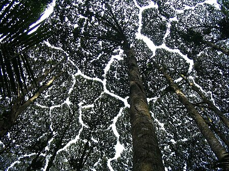

Crown-shyness
From wikipedia,the free encyclopedia
For the album by Trash Boat,see Crown Shyness(album)
Crown shyness(also canopy disengagement,[1]
canopy shyness[2]
or inter-crown spacing[3]) is a phenomenon
observed in the same treespecies,in which the crowns of fully stocked
trees do not touch each other, forming a canopy with channel-like gaps
.[4][5]The phenomenon is most prevalent among
trees of the same species.but also occurs between trees of different
species.[6][7]There exist many hypothese as to
where crown shyness is an adaptive behavior.and research suggests that
it might inhabit spread of leaf-eatting insect larvae.[8]
Contents
- Possible physiological explanation
- Species
- References
- External Links
Possible physiological explanation

The exact physiological basis of crown shyness in not certian.
[6]the phenomenon has been discussed in scientific
literature since the 1920s[9] The variety of hypothese and
experimental results might suggest that there are multiple mechianisms
accross different species, an example of convergent evlution.
[ citation needed] Some hypotheses contend that the
interdigition of canopy branches Leads to ''eciprocal pruning"
of adjacent trees . Tree in windy areas suffer physical damage as they
collide with each other during winds.As the result of
abrasions and collisions, there is an induced crown shyness response.
Studies suggest that lateral branch growth is largely uninfluenced by
neighbours until disturbed by mechanical abrasion. [10] If
the crowns are artitficially prevented from colliding in the winds,
they gradully fill the canopy gaps. [11] This explains
instances of crown shyness between branches of the same organism.
Proponents of this idea cite that shyness is particularly seen in
condition conditions conductive to this pruning, including windy
forests, strands of flexible trees, and early succession forests
wheer branches are flexible and limited inlateral movementr.
[6][12] By this explanation,variable flexibility in lateral
branches has a large bearing on degree of crown shyness.